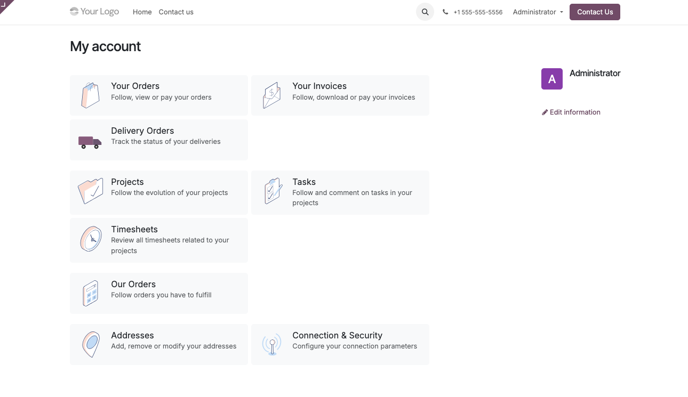
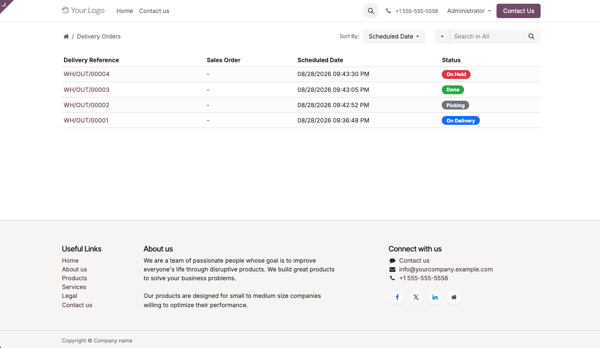
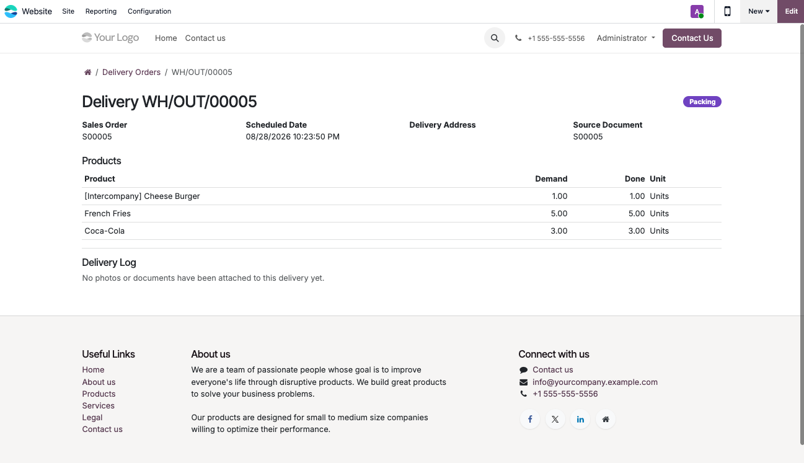
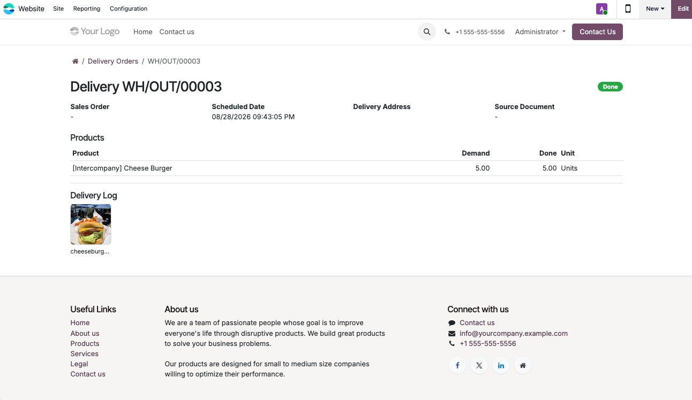
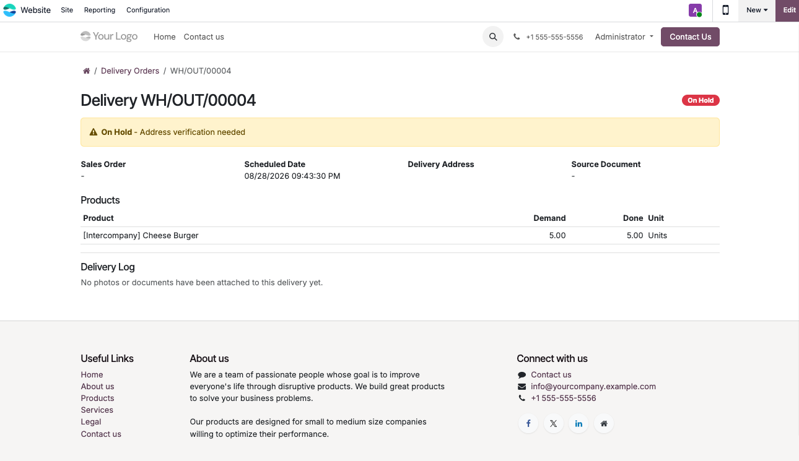
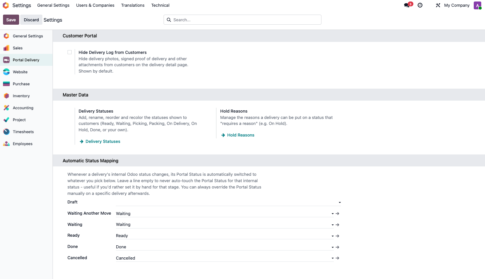

Give customers real-time, read-only visibility into their deliveries — right from their Odoo portal account.
Scoped Delivery ListShows only outgoing deliveries for the logged-in partner and its child contacts. No cross-customer data leakage. |
Search by DO or SOCustomers can filter their list directly by Delivery Order number or Sales Order reference. |
Strictly Read-OnlyView status, product lines, and optionally the chatter log. No edit access, no stock operations. |
Configurable StatusesBuild your own status list — name, color, and order — instead of Odoo's default picking states. |
Status ReasonsFlag any status to require a reason, shown automatically to the customer when that status is active. |
Settings, Not CodeToggle statuses, reasons, and portal visibility from Settings > Portal Delivery — no development needed. |
A clean, filtered list of deliveries available directly on the customer's portal.


Clicking into a delivery shows exact status, items, and references.

When a status is flagged as needing one, the reason displays automatically to the customer.
|
 |
 |
Build custom statuses and reasons from Settings — no code required.

We're happy to walk through setup or confirm it fits your delivery workflow.
Email us directly at: gou.wujunhao@gmail.com